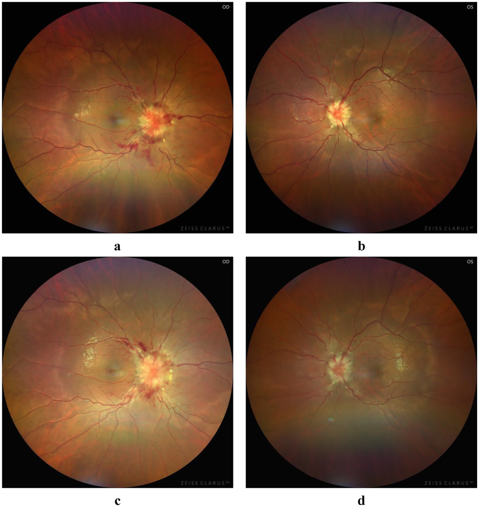

Página 7 · E3
Contexto que muda o jogo
Mulher com câncer de mama tratado; abre cefaleia nova há 10 dias. Em paralelo, no corredor, homem com AIDS e cefaleia. No outro box, TCE há 2 semanas e dor que piora.
Neoplasia
Paciente com câncer de mama que abre cefaleia nova: pensar em metástase cerebral.
Imunossupressão (nuance HIV)
Imunossupressão é sinal de alarme no contexto de cefaleia. Pessoas que vivem com HIV nem sempre estão imunossuprimidas — a maioria não está. O raciocínio de alarme ancora em imunossupressão, não no rótulo HIV isolado. Pacientes com AIDS podem ter abscessos cerebrais — exemplo clássico: neurotoxoplasmose. Imunossuprimido com cefaleia nova → investigar o crânio.
Focal e sítio
Sinal neurológico focal associado à cefaleia é alarme. Focal = tradução clínica de um foco de lesão encefálica. Ex.: foco no occipital esquerdo → déficit visual à direita. Ex.: foco na cápsula interna esquerda → hemiparesia facio-braquio-crural. Cefaleia + focal → algo no encéfalo; investigar.
TCE: agudo ou “babando”
TCE recente com cefaleia é alarme. A preocupação clássica é sangramento agudo — e deve ser assim. Nem todo sangramento pós-TCE é agudo: pode sangrar pouco a pouco (“babando”) ao longo dos dias e formar um grande hematoma tardio. Cefaleia + TCE recente → considerar hematoma (agudo ou de instalação lenta); pode precisar drenar.
Papiledema e HIC
Papiledema (edema de papila óptica bilateral) integra o conjunto principal de sinais de alarme. Em geral, é secundário a hipertensão intracraniana. Cefaleia + HIC (papiledema) → investigar sem dúvida.
Espirro / aneurisma
Alarme adicional rápido: cefaleia que surge quando o paciente espirra — suspeita de aneurisma que “explodiu”. Na triagem, esses sinais concentram as decisões de maior risco em prova e prática, embora não esgotem todas as red flags possíveis.

Quiz — fixação
-
Por que “HIV no enunciado” não fecha automaticamente o alarme de imunossupressão?
Gabarito B. o discriminador é imunossupressão real, não o rótulo sorológico isolado.
(A) falso (neurotoxo/abscesso existem no imunossuprimido). (C)(D) deslocam o eixo. Cai por textos que escrevem “HIV” como sinônimo de imunossupressão.
-
Lesão no occipital esquerdo tende a gerar:
Gabarito B. focal = tradução de sítio; occipital E → campo visual D.
(A) é o padrão da cápsula interna (cápsula E → hemiparesia facio-braquio-crural). (C) esvazia o conceito de focal. (D) não corresponde à tradução occipital. Cai por misturar vias ópticas com via piramidal.
-
TCE recente com cefaleia: além do sangramento agudo, o que deve ser lembrado?
Gabarito B. o tempo do hematoma não é só o minuto do trauma.
(A)(C)(D) fecham cedo demais. Cai por só treinar “TC imediata” e esquecer o hematoma subagudo/crônico.